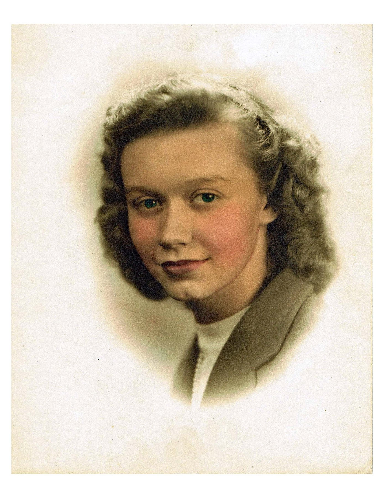

Home | BLOG
Kate's IT Girls BLOG
The Code Destroyer: Mary Louise Prather
Kate Craig / July 19th, 2022
Mary Louise Prather was an American spy, and one of the few women in the cryptography
field during the Cold War era and WWII. She joined the SIS in 1938, and worked many
different jobs in the office, slowly moving up in the office. Finally, in 1940, she reached
the position of Chief of the Stenographic section, making her in charge of filing
intercepted messages. She worked with the messages that were intercepted and worked
very secretly to ensure the safety of the country. Mary also helped distribute the
decoded messages to the correct people. Her most significant accomplishment was identifying
a correlation between two different Japanese messages, and using this knowledge to decrypt
more Japanese encoded messages.
